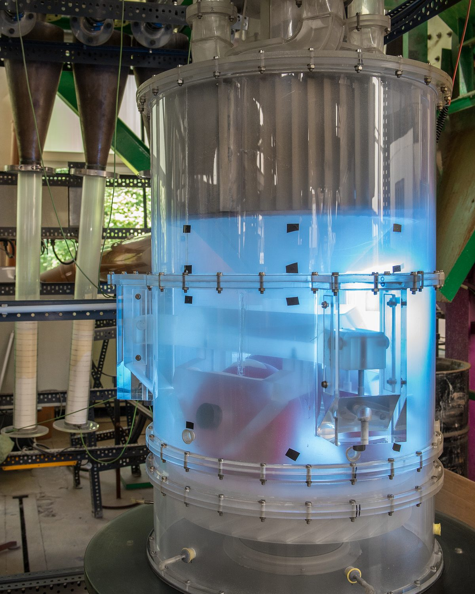
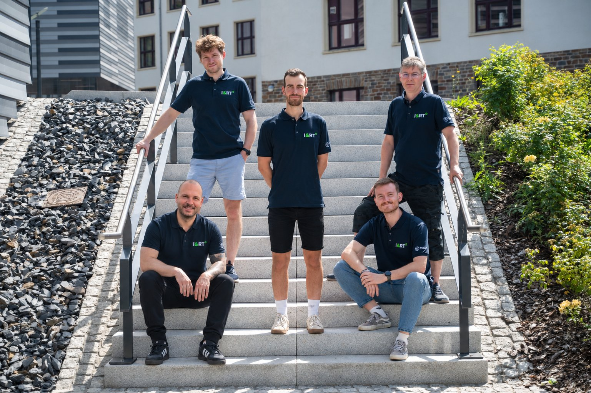
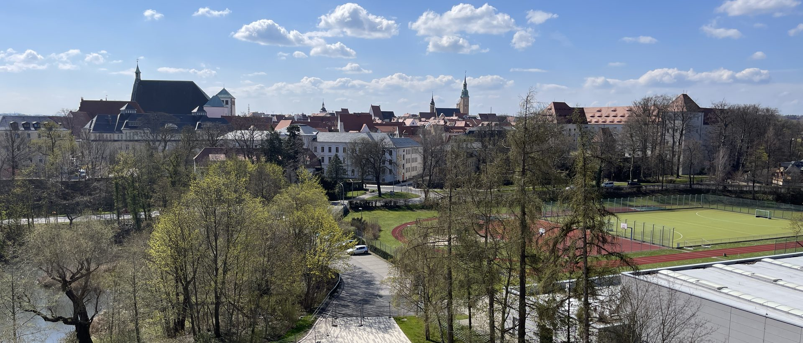

Mechanical, not melted
Every process step avoids re-melting the metal, cutting energy demand at the source.
Company
FlexCycle Solutions was spun out of TU Bergakademie Freiberg — the world's oldest mining academy — in the town that has defined European metallurgy for over eight centuries.
Freiberg has mined and processed metal since the 12th century. FlexCycle continues that lineage with a different resource: not ore from the ground, but thin-walled copper residues that battery cell production leaves behind in growing volumes. Our team developed the process at the Institute of Mineral Processing Machines and Recycling Systems Technology (IART) at TU Bergakademie Freiberg. This mechanical route turns that residue directly into powder, skipping the melt step that conventional powder production depends on.

Every process step avoids re-melting the metal, cutting energy demand at the source.
Feedstock comes from production residues, not fresh mining — the loop closes before the metal ever becomes waste.
Six defined grades mean customers order by particle size and morphology, not a single one-size-fits-all powder.

Milestones
A research project funded through the German Federal Ministry for Economic Affairs (ZIM). It looked at fine copper fractions from battery production for the first time and ran the first laser cladding tests with mechanically made powder.
German application DE 10 2023 115 631 filed in June 2023, followed by the European application EP 4 480 604 in June 2024.
A project funded by the German Federal Environmental Foundation (DBU), extending the work to coating applications and further material streams.
Funded by the Sächsische Aufbaubank and the EU, we are assessing the technical and economic case for a spin-off. In parallel, a semi-industrial pilot plant is being set up on the CircEcon circular-economy campus in Lusatia.
Funded through the EXIST programme: scaling the process up to a pilot line, producing standardised powder batches, testing them with pilot users and preparing the spin-off.
Planned founding as a GmbH in Chemnitz, close to the TU Chemnitz technology campus and 40 km from Freiberg.

Partners for testing, qualification and scale-up.